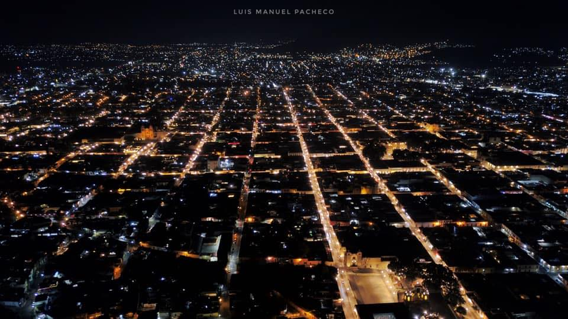

LA GUELAGUETZA | ||
¿Qué es la Guelaguetza?
La Guelaguetza es una de las celebraciones más importantes del querido Oaxaca, estado que se encuentra al sur de México, y colinda con Veracruz y Puebla. 
Guelaguetza significa ‘ofrenda’, viene del vocablo ‘guendalezaa’, representando la acción de dar, también es llamada localmente como la ‘Fiesta de los lunes del cerro’.
El origen de esta hermosa tradición data de la época prehispánica, siendo un ritual hacia los dioses, por lo que siempre han sido fechas importantes para los oaxaqueños. A lo largo de los años la celebración ha ido evolucionando, convirtiéndose en la fiesta que se conoce hoy en día.
La magia de la Guelaguetza

Todo da inicio una semana antes del 16 de julio, con el convite, un gran desfile, donde hacen su aparición estelar las Chinas Oaxaqueñas, mujeres de la ciudad que van con canastas enfloradas, y van en compañía de cada una de las siete regiones que participan; Los Valles Centrales, La Sierra Juárez, La Cañada, Tuxtepec, La Mixteca, Istmo de Tehuantepec y La Costa, tocando música de su región.
Llegando el amanecer del primer día de la Guelaguetza, los chirimiteros (bandas de música) tocan las mañanitas en diversos templos de Oaxaca, de ahí los habitantes lo toman como una señal para irse dirigiendo al emblemático Cerro del Fortín, donde se lleva a cabo toda celebración.
Al llegar les darán la bienvenida varios puestos de comida, listos para que degustes un delicioso café o delicias oaxaqueñas, tales como unas ricas enchiladas con tasajo, unos tamalitos, y las sabrosas empanadas de mole amarillo, todo mientras disfrutas de la marimba y los chirimiteros tocando música de la región, dando una atmósfera de fiesta.
Después de haber entrado en ambiente, inicia el show, con presentaciones musicales, bailes y cantos, en la que cada una de las siete regiones representa su patrimonio cultural.
Por lo que podrás conocer y maravillarte con el espectáculo, los cantos, la música, los bailes, los diversos trajes típicos, una tradición que vale la pena vivir, sin olvidar la hermosa vista que nos regala el Cerro del Fortín.
Al adarse por iniciada la festividad, las calles y poblados de Oaxaca se llenan de vida, diversas actividades toman lugar a lo largo de la Guelaguetza, podrás visitar muestras artesanales, gastronómicas, y muchas representaciones culturales que te harán enamorarte de Oaxaca.
¿Cuándo se celebra la Guelaguetza? Esta increíble fiesta, se celebra a partir del primer lunes después del 16 de julio, siempre y cuando no coincida con un lunes 18 de julio, ya que ese día se conmemora el aniversario luctuoso de Benito Juárez, de ser así, la Guelaguetza se recorre para el siguiente lunes. | ||